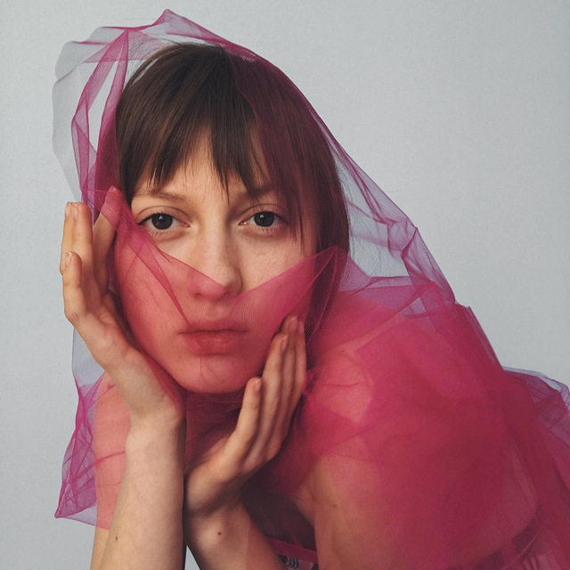

Дизайн Архітектурного Середовища
/
Студенти
Search
Try Notion
Студенти
Gallery
Filter
Sort
Бабинін Самуїл
Бардак Ірина
Дацків Соломія
Жидик Дарина
Квас Катерина
Король Вікторія
Купчик Вадим
Полянська Соломія
Рак Вікторія
Чень Софія
Ганчук Квітослава
Бохонко Марта
Кубицький Максим
Овсюк Аліна
Попитак Аліна
Почеква Софія
Шпуляр Вікторія
Смик Данило
Сольська Юлія
Скрикуляк Ганна
Васеніна Вікторія
Зварич Діана
Каденюк Роксолана
Кригуль Софія
Парасоцька Анастасія
Перегуда Марія
Проданчук Христина
Сохман Анастасія
Стойко Андрій
Якимчук Уляна
Войтович Дарина
Гнатів Аліна
Гризлюк Юстина
Ліщинська Вероніка
Надворецька Ірина
Рись Тетяна
Руда Юля
Смирнова Анастасія
Ципук Софія
Єршова Євгенія
Ільченко Уляна
Галька Ірина
Тимошик Вікторія
Франчук Єва
Напірко Роксоляна
Ткач Олександра
Бойчук Ярослава
Горбаль Марія
Крупник Руслана
Сибаль Анна-Марія

Колтун Анастасія
Gallery